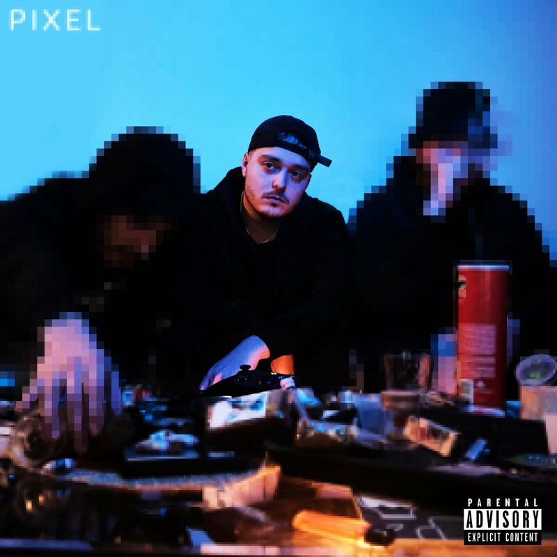
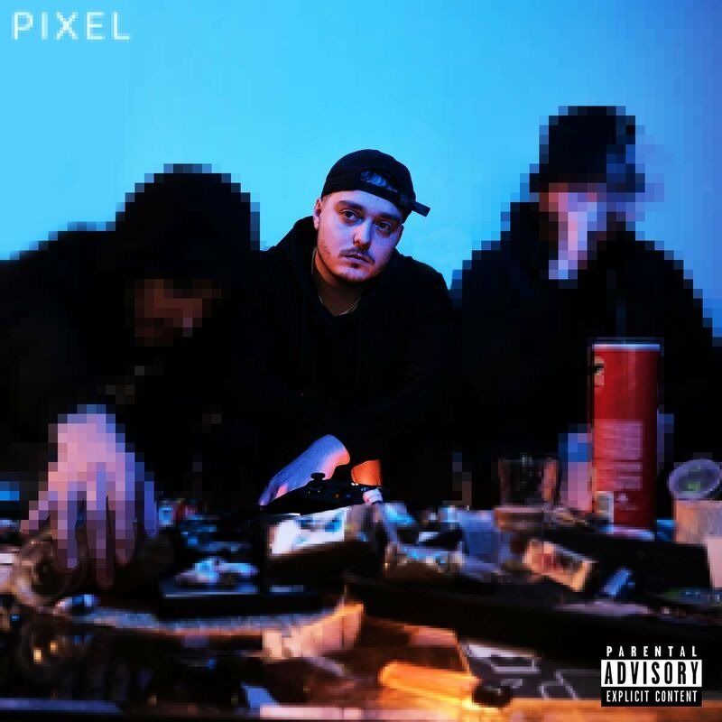
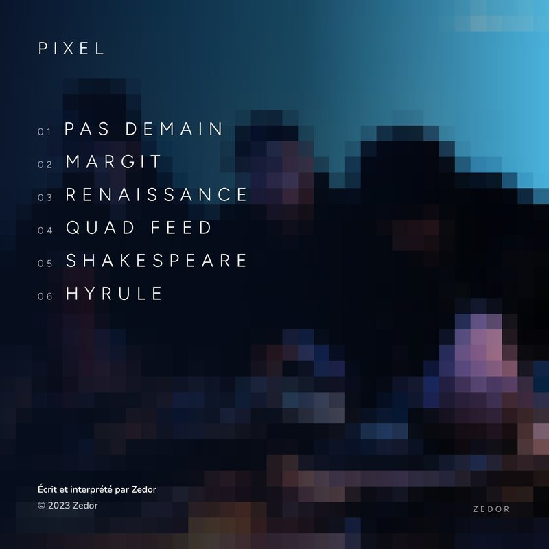
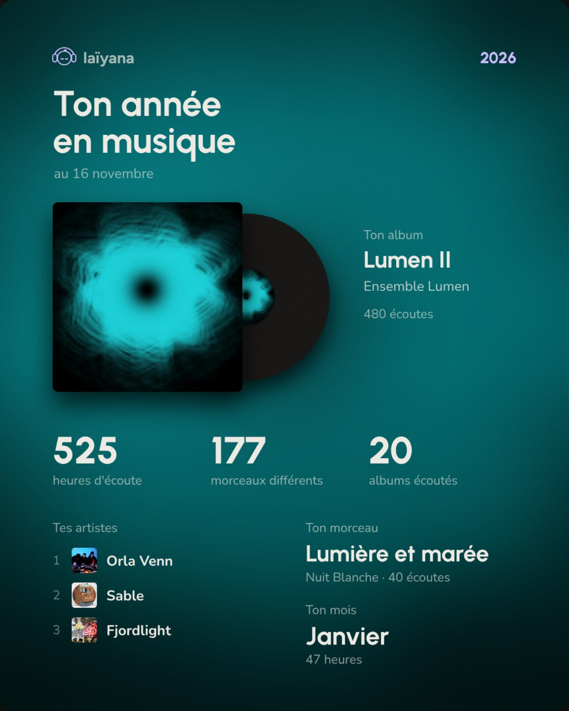

Pas besoin de t’y connaître : Laïyana t’explique ce que tu entends, et te rend le plaisir du disque qu’on tient en main : la pochette, le livret, le vinyle qui tourne.
Gratuit · sans compte · sans publicité
Le chemin du signal ne ment jamais.
Ta collection reste sur ton PC.
Tes disques redeviennent des objets.
Pendant l'écoute, la pochette prend toute la place, le vinyle en sort et tourne, les paroles défilent en rythme. Un geste de la souris et tout revient.

Zedor · Pixel
Hi-Res 96 kHz · 24 bits · Bit-perfect
Avec Sleeve, la pochette s'ouvre en grand, penche sous ta main et se retourne sur son dos. Son livret se feuillette page par page, directement dans l'app : Laïyana trouve tout seul les scans et les PDF rangés avec ta musique. Et dans le Flow, ta collection défile comme dans un bac de disquaire.


En mode studio, Laïyana parle directement à ta carte son ou à ton DAC, sans passer par le mélangeur de Windows. Le chemin du signal te montre chaque étape, du fichier à ta carte, et ne dit « Bit-perfect » que si rien n'a touché au son.
Tes albums en grille, les pochettes d'abord. Un clic sur l'un d'eux ouvre son aperçu sur place, aux couleurs de sa pochette : ses morceaux sont là, sans quitter la grille.

Une affiche tirée de tes écoutes : ton album, tes artistes, ton morceau, ton mois. Elle est calculée sur ton PC, rien ne part en ligne, et tu l'enregistres en image si tu veux la montrer.
FLAC · ALAC · WavPack · APE · WAV · AIFF · DSF · DFF · MP3 · AAC · Ogg Vorbis
Tout ce que tu as vu plus haut, sauf la correction du casque, est gratuit et le restera. Sans compte, sans publicité, sans limite de collection.
Un Pro optionnel, plus tard, pour ce qui ajuste le son. Une licence, sans abonnement. Il grandit avec le temps : les nouvelles fonctions arrivent au fil des versions, comprises dans ta licence.
Rien de ce qui est gratuit aujourd’hui ne passera au Pro.
Préviens-moi de la sortieUn seul message, le jour de la sortie, à contact@laiyana.app
Non. En mode studio, Laïyana joue en bit-perfect sur la carte son de ton ordinateur. Un DAC et un bon casque te permettent d'entendre tout ce que tes fichiers contiennent, surtout en Hi-Res.
Les deux contournent le mélangeur de Windows. WASAPI exclusif marche avec toutes les cartes ; ASIO passe par le pilote du fabricant de ton DAC.
Oui. Laïyana lit tes dossiers, ne déplace rien sans te le demander, et ne l'envoie nulle part. Les recherches en ligne (infos d'artistes, paroles) sont éteintes par défaut, se font sans compte et n'envoient que des noms et des titres.
Avec ta musique, sans rien installer d'autre : les scans du dossier de l'album et de ses sous-dossiers d'images (Scans, Artwork, Booklet…), dans l'ordre de leurs noms, et les livrets en PDF, page par page. La simple pochette ne compte pas comme un livret. L'aperçu d'un album indique son nombre de pages, la grille a un filtre « Avec livret », et tu les feuillettes en grand dans Sleeve.
Pas encore : Laïyana est d'abord fait pour Windows, où il parle directement à ta carte son. Une version Mac viendra plus tard, financée par le Pro (il me faudra un Mac pour la faire). Pas de date promise.
Laïyana est gratuit, sans compte ni publicité. Plus tard viendra un Pro optionnel (correction du casque, contrôle qualité, synchronisation du baladeur). Rien de ce qui est gratuit aujourd’hui ne passera au Pro.
Ouvre un fichier, il se joue. Range ta musique quand tu veux : double-clique sur un morceau ou glisse-le sur la fenêtre, Laïyana le lit tout de suite, sans rien ranger. Ta collection peut attendre.
Appuie sur Ctrl + Maj + R dans l'app : un rapport est copié. Colle-le dans un signalement sur GitHub, ou envoie-le à contact@laiyana.app.